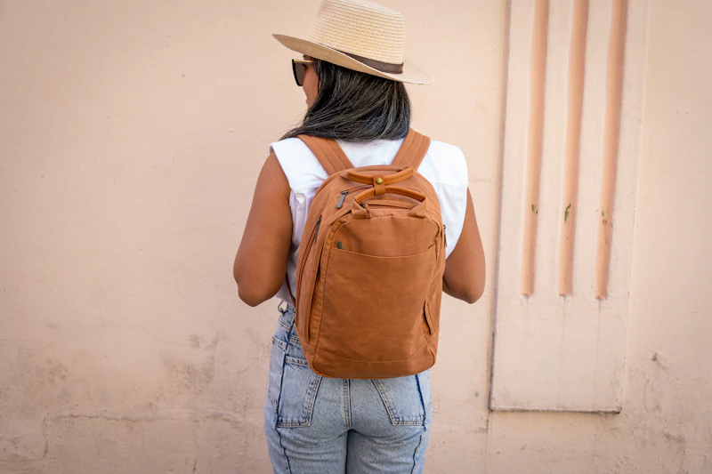
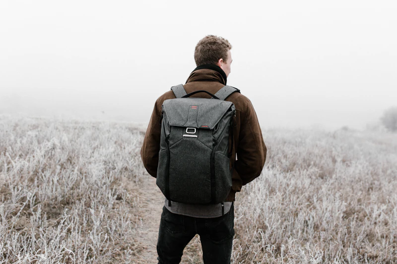

Buying guides
Simple, honest guides to help you choose bags, luggage, watches and what to pack.

Buying guide · 7 min read
Anniversary gift ideas for your husband, wife, parents and couples
Anniversary gift ideas in India for your husband, wife, mom and dad (including a 25th or 50th anniversary) and a couple you love: watches, couple watch sets, wallets, perfume sets and gifts for a trip together. Plus what to write in the card.
Read guide
Buying guide · 8 min read
Birthday gift ideas for everyone: husband, wife, brother, sister, mom, dad and friends
Useful birthday gift ideas in India for your husband, wife, boyfriend, girlfriend, brother, sister, father, mother, a best friend and kids: watches, wallets, bags, perfume sets and sunglasses, plus what to write in the birthday card.
Read guide
Buying guide · 11 min read
Honeymoon packing list: what to pack for the bride, the groom and the trip
A honeymoon packing list for Indian couples: documents, outfits for photos and dinners, what the bride and groom should pack, and what changes for a beach honeymoon (Maldives, Bali, Goa, Kerala) or a hill honeymoon (Manali, Kashmir, Munnar), plus bags, jewellery and what not to carry.
Read guide
Buying guide · 6 min read
School bag size chart by class and age
Which school bag size suits class 1, class 5 or class 10? A size chart in litres, cm and inches by age, plus the 10% body weight rule from India's School Bag Policy 2020.
Read guideBuying guide · 12 min read
Singapore packing list: what to pack and wear for a trip from India
What to pack for Singapore from India: light clothes for heat and rain, an umbrella, walking shoes, a layer for cold AC, the SG Arrival Card and visa, the right bag for IndiGo, Air India or Singapore Airlines, and what not to carry (chewing gum, vapes, duty-free cigarettes).
Read guide
Buying guide · 5 min read
Titan vs Fastrack: which watch is better?
Titan and Fastrack are made by the same company. Compare their style, dial sizes, straps, water resistance and warranty, plus where Sonata fits, with our picks.
Read guide
Buying guide · 8 min read
Valentine's Day gift ideas for him and her: watches, perfume sets and bags they'll use
Valentine's Day gift ideas in India for your girlfriend, wife, boyfriend or husband: Titan, Timex and Fastrack watches, perfume gift sets, slings, wallets, sunglasses, couple watches, and a gift for each day of Valentine week.
Read guide
Buying guide · 8 min read
Perfume gift sets for men and women: EDP vs EDT, attar and travel sizes
How to choose a perfume or a perfume gift set in India: EDP, EDT, deo and attar in plain words, how long each lasts on skin, 20 ml travel sizes and the 100 ml cabin rule, and gift tips for him and her.
Read guide
Buying guide · 7 min read
Power banks for flights and travel adapters: how to choose
Which power bank is allowed on Indian flights (10,000 and 20,000 mAh are fine), how to read mAh and Wh, plug types for Thailand, Dubai, Bali, Singapore, the UK, the US and more, and adapter and power bank picks.
Read guideBuying guide · 5 min read
Sunglasses buying guide: UV protection, polarized lenses and the right size
How to choose sunglasses in India: what 100% UV and UV400 mean, when polarized lenses help, how to read frame sizes like 56-19-140, shapes for your face, and picks for men and women.
Read guide
Buying guide · 5 min read
Wallets and belts: how to choose one, for yourself or as a gift
Full grain, top grain, genuine or PU leather? How many card slots you need, what RFID blocking does, how to pick a belt size from your waist, and wallet and belt gift picks for men and women.
Read guide
Buying guide · 13 min read
Nepal packing list: things to carry for a trip from India
What to carry for Nepal from India: passport or original voter ID (Aadhaar isn't accepted by air), the ₹25,000 limit on ₹200 and ₹500 notes, what to wear in November, December and January, temple dress at Pashupatinath, plugs and bag limits on Buddha Air and other airlines.
Read guide
Buying guide · 12 min read
Andaman packing list: what to pack and wear for Andaman
What to pack for Andaman: light clothes and dresses, swimwear, rain gear for December, shoes that can get wet, a waterproof pouch for ferries, bag limits on flights and ferries, what to wear on a honeymoon and what you can't bring back.
Read guide
Buying guide · 14 min read
Bhutan packing list: things to carry for a trip from India
What to carry for Bhutan from India: passport or voter ID, the SDF of Nu 1,200 a night, warm layers for December and January, what to wear to dzongs and temples, shoes for Tiger's Nest, plugs, cash rules and the bag limits on Drukair and Bhutan Airlines.
Read guide
Buying guide · 6 min read
Christmas gift for your boyfriend or husband: useful ideas he'll use
Christmas gift ideas for a boyfriend or husband in India: Titan, Timex and Casio watches, a leather wallet set, slings, laptop backpacks, travel gear and winter wear. Plus ideas for dad and brother.
Read guide
Buying guide · 6 min read
Christmas gift for your girlfriend or wife: useful ideas she'll use
Christmas gift ideas for a girlfriend or wife in India: Titan watches, handbags and slings, a zip-around wallet, travel gifts and winter wear for a December trip. Plus ideas for mom and sister.
Read guideBuying guide · 5 min read
Christmas gifts for kids: useful ideas for boys and girls
Christmas gift ideas for kids in India that get used every day: a first Titan Zoop watch, school bags for younger and older kids, a steel sipper bottle, and gifts for a December family trip. For boys and girls.
Read guideBuying guide · 15 min read
Maldives packing list: what to pack and wear for a trip from India
What to pack for the Maldives from India: beach clothes, modest outfits for Malé and local islands, what to wear at night, sun care, a waterproof pouch, seaplane bag limits, what you can't bring in (alcohol, idols, vapes) and lists for couples, women, men and families.
Read guide
Buying guide · 15 min read
Sri Lanka packing list: what to pack and wear for a trip from India
What to pack for Sri Lanka from India: light clothes for the coast, a warm layer for Nuwara Eliya and Ella, white or modest clothes for temples, rain gear for the monsoon, the right bag for IndiGo or Air India, what you can't bring in (cigarettes, beedis, fruit) and and lists for women and men.
Read guide
Buying guide · 17 min read
Vietnam packing list: what to pack and wear for a trip from India
What to pack for Vietnam from India: warm layers for Hanoi and Sa Pa in winter, light clothes for Ho Chi Minh City, rain gear for Da Nang and Hoi An, the right bag for Vietjet or IndiGo, what not to carry and lists for women and men.
Read guide
Buying guide · 13 min read
Bali packing list: what to pack and wear for a trip from India
What to pack for Bali from India: light clothes, rain gear for the wet season, a sarong for temples, shoes for beaches and waterfalls, the right bag for IndiGo, plugs, what not to carry and lists for men, women and kids.
Read guide
Buying guide · 13 min read
Dubai packing list: what to pack and wear for a trip from India
What to pack for Dubai from India: clothes for warm days and cool winter nights, what to wear at malls, mosques and the desert safari, the right cabin bag for Emirates, flydubai or IndiGo, medicines and what not to carry.
Read guideBuying guide · 7 min read
Farewell gift ideas for a colleague: for a male or female colleague, your boss and retirement
Useful farewell gifts for a colleague in India: wallet sets, watches, work bags and travel gear for a male or female colleague, a boss or manager, someone moving abroad and someone retiring. Plus how to choose a team gift.
Read guideBuying guide · 13 min read
Thailand packing list: what to pack and wear for a trip from India
What to pack for Thailand from India: light clothes, one temple outfit, shoes, rain gear for Phuket, the right cabin bag for IndiGo or Thai Airways, plugs, what not to carry and lists for men, women and kids.
Read guide
Buying guide · 6 min read
22 inch trolley bag: size in cm, and is it allowed as a cabin bag?
A 22 inch trolley is 55.9 cm, a small cabin size, but 0.9 cm over the 55 cm limit of most Indian airlines. See what "22 inch" bags measure and three that fit.
Read guide
Buying guide · 6 min read
26 inch trolley bag: size in cm, litres and how many kg it holds
A 26 inch trolley is 66 cm, the most common medium size in India. See what 66–70 cm bags really measure, how many litres and kg they hold, and three picks.
Read guide
Buying guide · 7 min read
32 inch trolley bag: size in cm, weight and is it allowed in flight?
A 32 inch trolley is 81.3 cm tall. We read 11 of the biggest bags on Amazon.in: none is within the 158 cm limit of Indian airlines. See which airlines take one.
Read guideBuying guide · 5 min read
Gift for your boss: Christmas and farewell gift ideas for a male or female boss
Gift ideas for a boss that look smart and get used: Titan watches, leather wallets and bags, laptop backpacks and travel gear for a male or female boss. Plus what to avoid.
Read guideBuying guide · 5 min read
Gifts for travellers: useful gift ideas for someone who travels a lot
Gifts for someone who travels a lot, for work or for fun: toiletry bags, gadget organisers, passport holders, luggage scales and cabin bags that fit airline limits. For men and women.
Read guide
Buying guide · 8 min read
Goa packing list: what to pack for a Goa trip in December and January
A simple Goa packing list for winter: clothes for hot days and cool evenings, beach and church outfits, shoes, sun care, what to pack for women, men and kids, and what not to fly home with.
Read guideBuying guide · 5 min read
Secret Santa gift ideas for office colleagues: useful gifts for men and women
Useful Secret Santa gifts for office colleagues in India: a wallet gift set, a zip-around wallet, a steel bottle and small travel gifts, for men and women. Plus simple rules for the office gift exchange.
Read guideBuying guide · 7 min read
Trolley bag size for international travel: which bag fits 23 kg and 158 cm?
For flights abroad, most airlines limit one checked bag to 158 cm in total, and to 23 kg on USA, Canada and Europe routes. See which trolley size fits, with picks.
Read guide
Buying guide · 3 min read
VIP Bags coupon code
Is there a VIP Bags coupon code that works? We test it in VIP's own cart and show the date of our last check. Covers VIP, Skybags, Aristocrat and Caprese bags on vipbags.com.
Read guide
Buying guide · 8 min read
What to wear in Manali in December: layers, shoes and a packing list
How cold Manali gets in December, what to wear in town and in the snow at Solang or the Atal Tunnel, which shoes to take, packing lists for men, women and kids, and tips for Shimla.
Read guideBuying guide · 5 min read
20 inch trolley bag: size in cm, and is it allowed in the cabin?
A 20 inch trolley is 50.8 cm, but many sold as "20 inch" in India are 55 cm or taller. See airline limits, how much it holds and two bags that fit.
Read guide
Buying guide · 4 min read
24 inch trolley bag: size in cm, weight and how much you can pack
A 24 inch trolley is 61 cm, but most sold in India are 65–69 cm. See what 36 medium bags really measure and how much you can pack on a 15 kg fare.
Read guide
Buying guide · 5 min read
28 inch trolley bag: size in cm, and why most large bags go over the 158 cm limit
A 28 inch trolley is 71 cm, but most large bags in India are 75–80 cm. We checked 31 models: 26 are listed over the 158 cm airline limit. See the 5 that aren't.
Read guideBuying guide · 6 min read
American Tourister vs Safari trolley bags: which is better?
We compared American Tourister and Safari trolleys listed on Amazon.in by weight, litres, full size and warranty. See which brand suits your trip and fare.
Read guideBuying guide · 6 min read
Backpack size chart in litres: which size do you need?
What do 20, 30, 40 and 60 litre backpacks suit? See a simple size chart, the largest size that fits Indian airline cabin limits, and how to check the litres.
Read guideBuying guide · 6 min read
Best trolley bag brands in India: 7 brands compared
American Tourister, Safari, Aristocrat, Skybags, Kamiliant, VIP and L'Attitude compared by listed weight, litres and full size. See which brand suits your trip.
Read guideBuying guide · 3 min read
New Year gift ideas 2027: useful gifts for family, friends and travellers
Useful New Year gift ideas: watches for him and her, pair watches for parents, handbags and small travel gifts. Plus how to choose, and when to order.
Read guideBuying guide · 5 min read
Polycarbonate vs polypropylene trolley bags: which is better?
Polycarbonate is usually called tougher and polypropylene lighter. We checked 62 Amazon.in listings by weight, and the gap was small. See which suits your trip.
Read guideBuying guide · 3 min read
Amazon Republic Day Sale 2027: dates so far, and how to choose bags and watches
Amazon hasn't announced its 2027 Republic Day sale yet. Last year's began on 16 January. How to get ready, and what to check on bags and watches.
Read guideBuying guide · 9 min read
Trolley bag capacity: how many kg and litres each size holds
How many kg can a 55, 65 or 75 cm trolley hold? Litres listed on 80 models on Amazon.in, a rough kg guide, and real packing lists for 7 kg and 15 kg.
Read guideBuying guide · 6 min read
VIP trolley bags: every range, sizes, warranty and returns
All 19 VIP luggage lines on VIP's own store: which are polycarbonate, polypropylene or soft, which expand, their sizes, the warranty and the 3-day return rule.
Read guideBuying guide · 2 min read
Handbag, tote or sling: how to choose for work and travel
Tote, satchel or crossbody sling? Compare them for work and travel, see airline personal bag limits in India, and find picks for women and men.
Read guide
Buying guide · 2 min read
Which shoes to take on a trip: snow, sightseeing and the beach
Choose shoes by the trip: waterproof or water resistant, walking shoes for forts, sandals for the beach, plus sizing and packing tips, with picks for men and women.
Read guideBuying guide · 3 min read
Sunscreen and skincare for trips: what to pack and what fits your cabin bag
The 100 ml rule, what SPF and PA mean, how much sunscreen a trip really needs, and travel-size sunscreen, lip balm and moisturiser picks.
Read guideBuying guide · 2 min read
What to wear on a winter hill trip: thermals, jackets and layers
How to dress for Manali, Shimla or Kashmir in winter: three simple layers, which fabrics to choose, and thermal and jacket picks for men and women.
Read guideBuying guide · 3 min read
What size luggage do you need? A simple guide by trip length
Cabin, medium or large? Match your trolley size to your trip, airline limits and how you travel, plus hard vs soft luggage.
Read guideBuying guide · 3 min read
Wedding gift ideas: watches and travel bags couples actually use
Pair watches for the couple, watches for the bride and groom, and bags for the honeymoon, with tips to pick the right one.
Read guideBuying guide · 5 min read
Cabin bag rules for Indian flights and how to pick the right trolley
The 7 kg and 115 cm rule explained, why "55 cm" bags can still be too big, and our cabin and check-in picks.
Read guideBuying guide · 2 min read
How to choose your first analog watch
Dial size, strap type, water resistance and warranty in plain words, with picks for men and women.
Read guide
Buying guide · 3 min read
How to choose a laptop backpack for college or office
Laptop size, litres, comfort and monsoon protection explained simply, with our picks.
Read guide